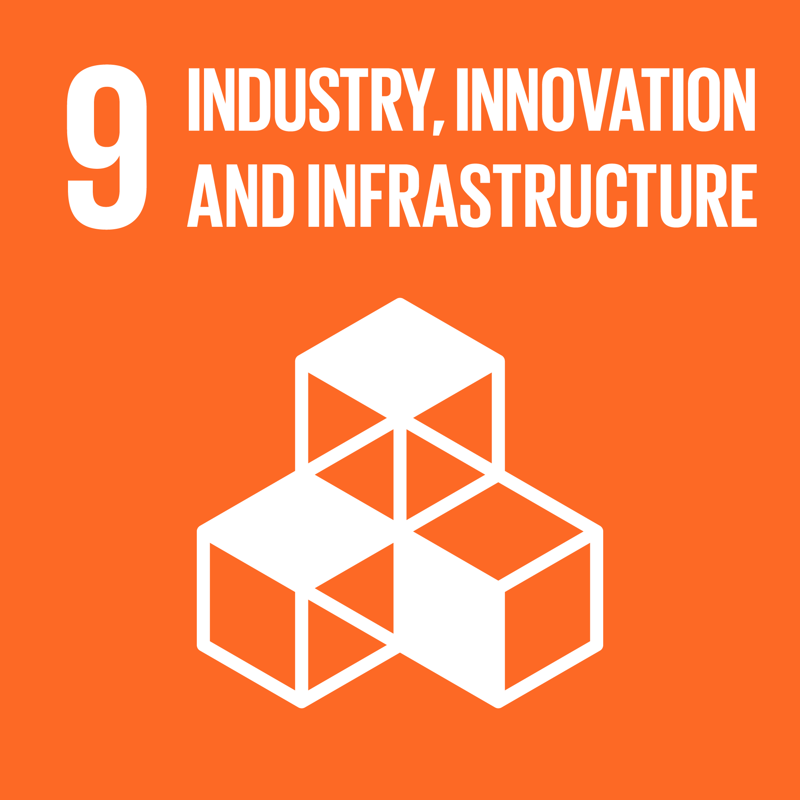
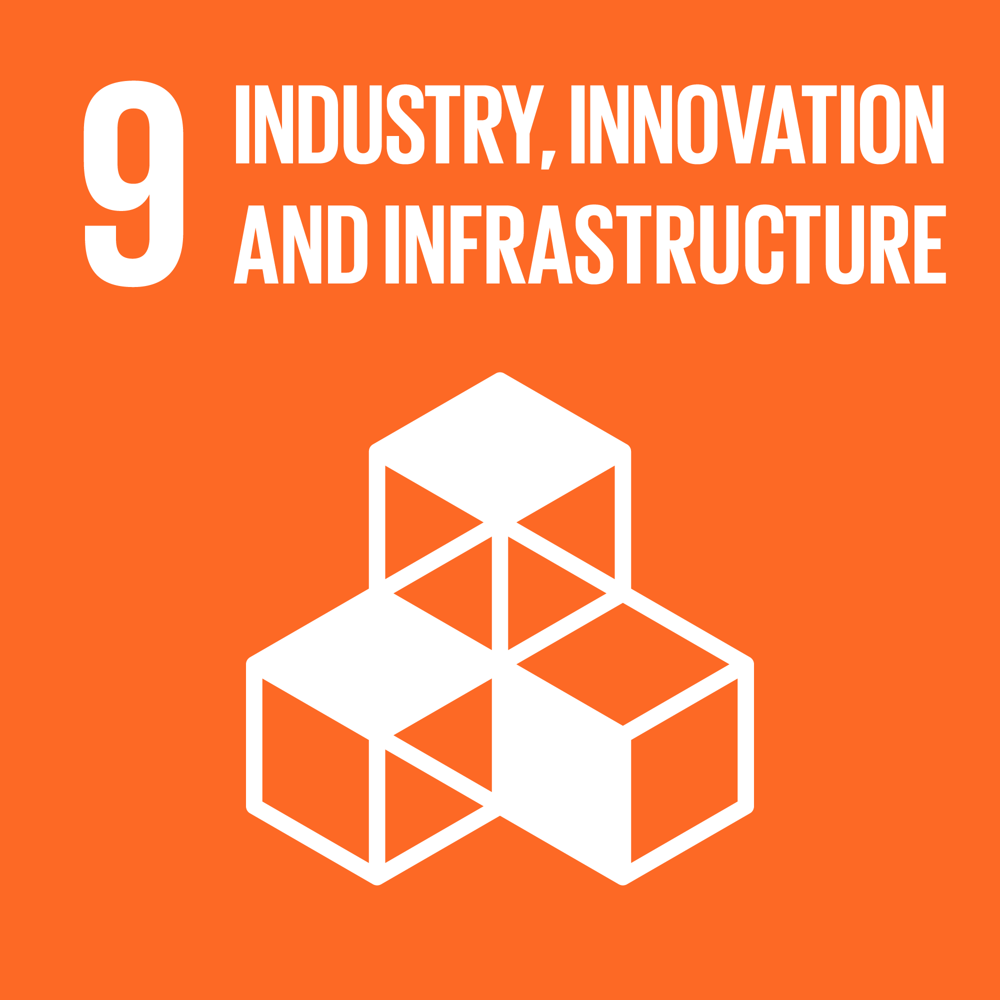
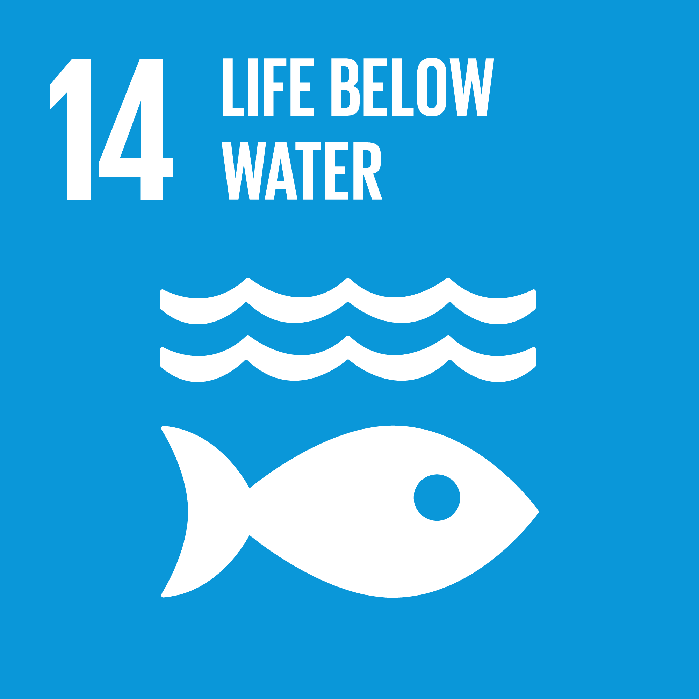
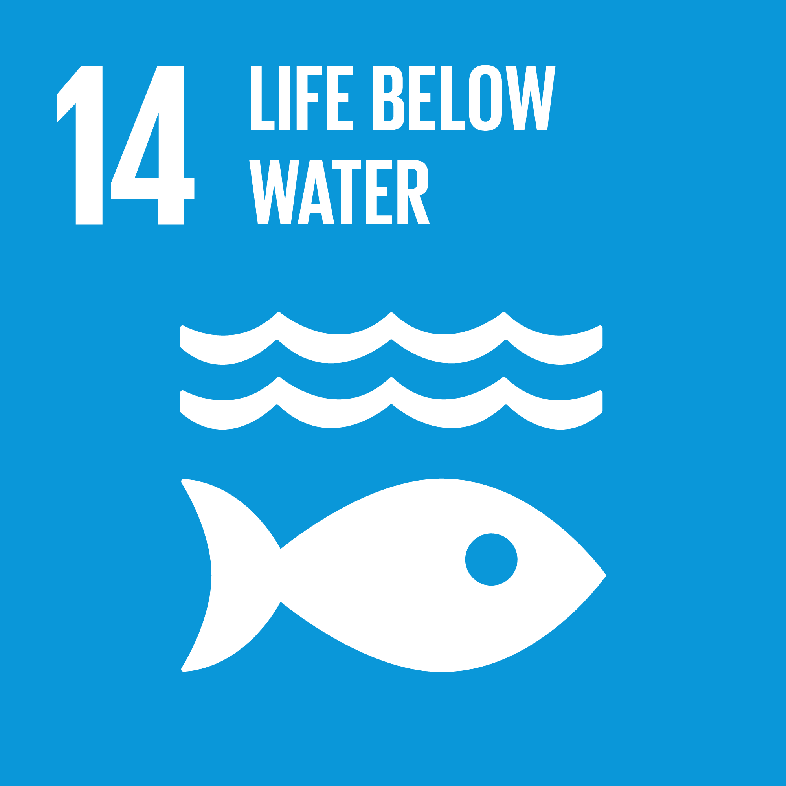
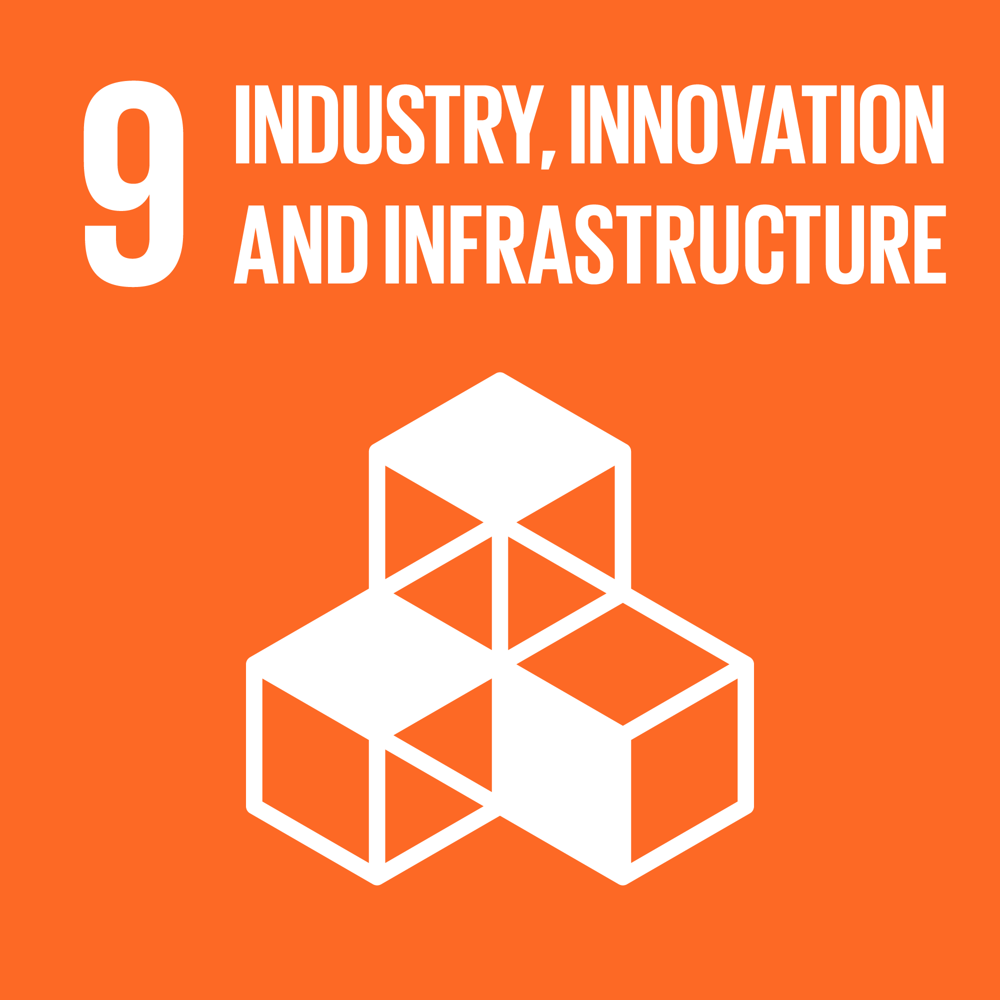
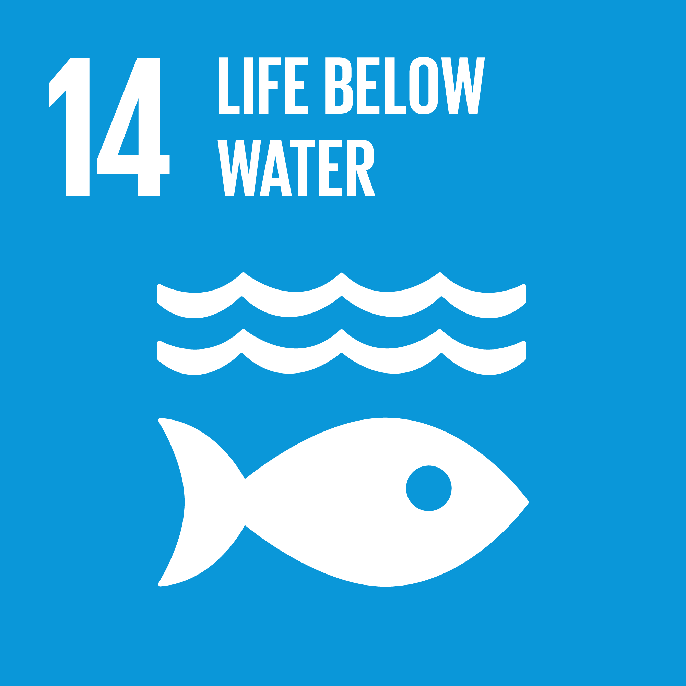
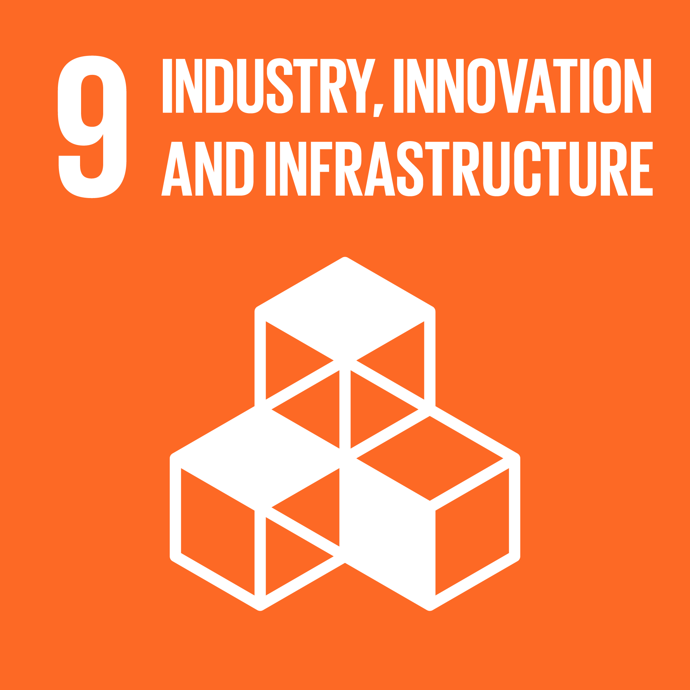
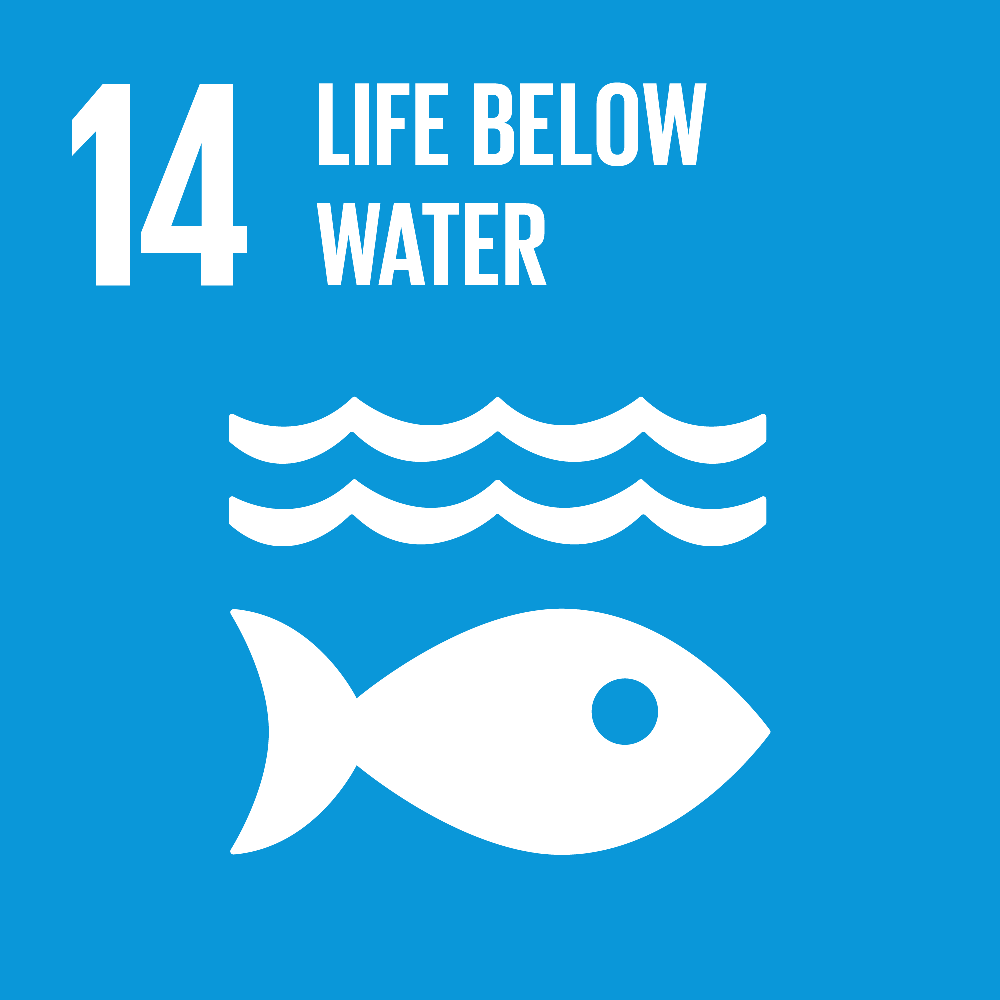

 

 



This is a case study by Dr Manjit Sharma, about poverty in a village named Shergarh in the Bhatinda district of Punjab. Being a relatively better-performing state, all the 15 poorest households that are selected as samples for the research had self-owned houses, almost 3 meals a day etc. But poverty is visible in terms of health, education, family assets etc. The family size of the sample households is also taken understudy to understand the dependency of the family on the earner and the demography of the sample. Assets that are studied for the research are the quality of the houses, that is, availability of kitchen, bathroom, proper drainage system, toilets, handpump, electricity, animals, land owned and private transport. Education level in these households was not very good either for 60% of the households, the family head was illiterate. 40% of children in the family were not going to schools. 53.33% of the households had members addicted to alcohol, smoking or any other substance abuse. He also talks about the type of consumption and uses the calorie method to understand poverty.
Case Study By:
Dr Manjit Sharma
Amit, a 23-year-old from a rural village in Uttar Pradesh, has lived his entire life amidst the challenges of poverty, a reality that has limited his opportunities and aspirations. Coming from a family of agricultural laborers, Amit’s parents earn meager daily wages that barely cover basic necessities, leaving little room for educational expenses or health emergencies. As a child, Amit attended a local government school with minimal resources, including outdated textbooks, overcrowded classrooms, and unqualified teachers. By the age of 16, he had to drop out of school to work alongside his father in the fields, an early end to education that stunted his chances for upward mobility.
Now, as a young adult, Amit dreams of starting a small business in his village, perhaps a mobile repair shop or a small convenience store. However, his ambitions are thwarted by several barriers: lack of access to affordable loans, absence of electricity for extended hours, and limited business infrastructure in his area. Furthermore, basic amenities are scarce; his family’s access to clean drinking water is inconsistent, healthcare services are far from the village, and seasonal monsoons often damage roads, cutting off transport routes.
Amit’s story is emblematic of the structural poverty that affects millions in rural India. Despite his potential and desire to create a better life, he is caught in a web of systemic challenges—limited educational opportunities, a lack of infrastructure, poor healthcare access, and economic uncertainty. His situation underscores the urgent need for targeted government initiatives and community-driven programs that can empower young people like Amit, giving them the tools and resources they need to break free from the cycle of poverty and contribute meaningfully to the growth of their communities.
Case Study By:
Unknown
Rani Devi, a 35-year-old mother of four, lives in a small village near Patna, Bihar, where poverty shapes the daily struggles and resilience of her family. Her husband works as a seasonal laborer on nearby farms, earning low and unstable wages that depend heavily on the agricultural season. During the off-season, he often migrates to nearby towns to work on construction sites or as a daily wage laborer, leaving Rani responsible for managing their household and caring for the children. With an income of around ₹3000 a month, Rani’s family can barely cover essential needs, and she faces additional challenges with limited access to healthcare, clean water, and basic sanitation. The closest healthcare center is over 10 kilometers away, making medical help difficult to access, especially when her children fall ill due to waterborne diseases from unsafe drinking water. Although Rani highly values education, the village's government school is poorly equipped, lacking basic resources like textbooks and qualified teachers. Her eldest son had to drop out of school early to support the family, a decision that weighs heavily on her. Rani has joined a self-help group (SHG) for women, which enables her to save a small amount and borrow from pooled resources to start a modest home-based craft business. This additional income, though small, has helped her keep her younger children in school and put food on the table. Rani’s life exemplifies the cycles of poverty many women face, where gender inequality, insufficient resources, and economic hardship converge, yet her efforts through self-help and small business initiatives reveal her resilience and determination to improve her family’s future.
Case Study By:
Unknown